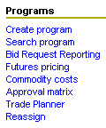

Blacksmith Applications, www.blacksmithapps.com
Home > Programs
The options you see under Programs may differ, depending on your implementation.

When you create a program, the first step is to select a responsible sales person from the popup window. This popup allows you to control which user position should be affiliated with the program, which is important if you have users who are assigned to multiple positions. Scenarios where this user selection scenario would be valuable are: where a user is a broker of multiple areas, where a user is temporarily assigned to a position while it is vacant, etc.
Then, select a program type or template from the list of program templates that display . The program templates from which you can select are shown, broken out by general program type (off-invoice, distributor/trade shelter, etc.).
Each program template has a "details" link to the right. Use the details link to examine the different program templates and find the one that best suits your program. Clicking the details link displays a summary of the fields that are on the selected program template.
To actually create a program, click either the Program Name or Description. The Edit program page displays showing the basic program info page for the program template you selected.
Along the left side of the edit program page is a listing of program pages and actions that can be taken (given the appropriate permissions and given that the system has enough information about the program).
See the program template fields topic for a description of most of the fields that display on any given template.
Search program - Use search program to retrieve a program by entering selection criteria.
Use Bid Request Reporting to retrieve a bid by entering selection criteria, such as by program (and dates), product, customer and geography. Click to see a sample of the bid search page.
Click [Futures pricing] to display any futures pricing requests. The totals for all Futures pricing requests display at the top, and individual futures pricing request rows are listed below.
The totals section shows you the number of Initial Requests, Raw Requirements, Procurement Quotes, Pricing, Price to Sales and Expired futures pricing requests.
Each individual pricing request row has a column for Status, Title, Start Date/End Date, Customer Deadline, Good Until Date and Created By.
Click anywhere in a futures pricing request row to view the product (and volume and price/pound).
The Status of the futures pricing request includes checkmarks for each futures pricing step that has been completed.
To view the full details of a future pricing request, click the magnifying glass at the left of the row of the futures pricing request you want to see.
Use the [search futures pricing] and [create new] links to search existing futures pricing records, or to create new futures pricing records.
The Commodity costs link displays a page showing commodity data sources on the left. Click the right-facing triangle next to a commodity data source to expand it and show all product commodity data within that source. To display commodity data about a product, simply click it, and the commodity pricing window displays (you can adjust the period).
On the right pane across from the Commodity Data Source list is the Saved Pricing Rules list, showing any existing pricing rules (and the Rule Name, with whoever updated it and the modified date) as well as a link to [create pricing rule].
If you click the [create pricing rule] link, the Create Pricing Rule Step 1 (of 4) page displays.
1. Enter a name for the rule.
2. Click the link next to Product Selector labeled [click here to select products], to open a Product Search page. Select your product search criteria (optionally click the show already assigned products checkbox) and click the [search products] link. If you selected the show already assigned products checkbox, the list of products that displays will show products that have already been selected for a pricing rule with a gray background.
Select the checkboxes next to the products you want to include in this pricing rule. You can use any of the links at the bottom of the product search page: [import selected products], [import all returned products] or [remove all selected products].
When you return to the Create Pricing Rule page, the products you selected display under 2. Product Selector.
3. Select Commodities - Use the [click here to select commodities] link to display the Commodity Search page.
Approval matrix - The Approval Matrix displays the approval and view margin rights of each user profile, including a breakout by approval groups if they have been set up in user profiles' Approval Methods dollars per pound margin.
Reassign - Use Reassign to reassign programs from one position to another position. First, search for the position for which you need to reassign programs; then, search for the position to which to assign the programs.